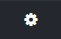
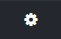
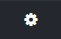

If you are familiar with Docker you can follow these instructions to get going as quickly as possible.
On Windows and OS X you must have the Docker Toolbox installed and running. See the Docker documentation for details on how to run Docker. All Docker commands are run from the Docker Quickstart Terminal
Under Windows, open a Docker Quickstart Terminal window ()
Under OS X you can use the Docker Quickstart Terminal shortcut () to start a new Docker terminal session. You can also make any terminal window docker-enabled by using this command from the command line:
eval $(docker-machine env default)
to set the Docker environment in your current terminal window. You can add this line to your ~/.profile script so that new terminal windows are automatically configured for Docker.
Download the DITA for Small Teams dfst-docker Zip package from the dita-for-small-teams project releases area:
Unzip the DFST release package to somewhere convenient, e.g. c:\temp.
You should get a directory named dfst-docker with this content:
> cd c:\temp\dfst-docker
> dir
LICENSE
README.md
containers
dfst
The dfst script is the main script for managing the DFST components through Docker. It is a bash shell script intended to be run in a Docker Quickstart Terminal under Windows or OS X.
Start a Docker Quickstart Terminal () and navigate to the directory for the DFST package:
ekimber@WIN-HH0I81E3DAU MINGW64 /c
$ cd temp/dfst-docker
ekimber@WIN-HH0I81E3DAU MINGW64 /c/temp/dfst-docker
$ ls
bin/ containers/ dfst docs/ LICENSE README.md
Run the command "dfst start":
ekimber@WIN-HH0I81E3DAU MINGW64 /c/temp/dfst-docker
$ dfst start
Starting DFST Docker containers in the background. Use docker-compose commands or Kitematic to view the status.
Pulling redis (sameersbn/redis:latest)...
latest: Pulling from sameersbn/redis
… lots more messages here ...
Creating gitlab-dfst
Docker machine IP address is '192.168.99.100'
Docker containers:
CONTAINER ID IMAGE COMMAND CREATED STATUS PORTS NAMES
7971effdd6cb dfst/gitlab-dfst "/assets/wrapper" 3 seconds ago Up Less than a second 0.0.0.0:80->80/tcp, 0.0.0.0:443->443/tcp, 0.0.0.0:8022->22/tcp gitlab-dfst
aab650590a70 dfst/link-manager-basex "/opt/basex/bin/basex" 2 minutes ago Up 2 minutes 0.0.0.0:1984->1984/tcp, 0.0.0.0:8984->8984/tcp linkmgr-dfst
a280cacb6079 sameersbn/postgresql:9.4-12 "/sbin/entrypoint.sh" 2 minutes ago Up 2 minutes 5432/tcp dfstdocker_postgresql_1
f15cb9d8c17a sameersbn/redis:latest "/sbin/entrypoint.sh" 4 minutes ago Up 4 minutes 6379/tcp dfstdocker_redis_1
The first time you do this Docker has to download all the images for the containers and this can take a while. The next time you run it, it will be quick.
The DFST containers should start. It will take a minute or two for the Web services in the containers to start up completely.
To make GitLab ready to use as a remote git repository you have to first set up the GitLab root user to match your user on the machine you're using. These steps should be automatable but so far I haven't been able to work out how to automate this configuration. Because of the way Docker persists (or doesn't persist) data, you may need to repeat these steps if the main Docker machine is reset, for example, if you reboot your machine. I am working hard on automating this configuration.
In the Docker terminal, type the command "dfst gitlab" to open the GitLab Web application.
Your browser should open to the GitLab login page:
Figure 1. GitLab Login Screen
If your browser doesn't open, make sure you have Google Chrome installed.
Log in as root using the password "5iveL!fe"
You should be taken to the "New password" page.
Enter "5iveL!fe" as the current password and set the new password to whatever you want.
You will be using this password to authenticate using git so pick a password you can remember. The password will be reasonably secure as stored in the GitLab container so it should be safe to use your regular password.
You should be taken back to the login screen so you can log in with your new password.
Log in with the new password.
You should go to the Projects page:
Figure 2. GitLab Projects Page
Navigate to the Admin user's profile settings:
Click on the user icon (), then on "account" ()
Scroll down to reveal the "Change Username" section:
Figure 3. GitLab Change Username field
Change "root" to whatever user name you use on your machine, e.g. "ekimber" and save the user name.
You want to use your username so that when you use git commands everything works as you would expect.
This renaming of the root user is a workaround for as yet being unable to automatically configure new users in GitLab.
At this point you should be ready to create new projects in GitLab and connect them to your local git repositories on your machine. You can use any git repository you have but for demo purposes the DITA Community DITA Demo content collection, the "Thunderbird" document set, has been included to make it easy to get started. To use it you just need to copy it out of it's container to your local machine.
In the Docker Quickstart Terminal do the following commands:
$ docker ps | grep demo
This lists details for the demo content container. It should look like this:
2c675bf0f308 ditacommunity/demo-content:latest "top" 15 minutes ago Up 15 minutes big_bhaskara
But more spread out. The last token on the line is the container name, in this example "big_bhaskara" (yours will likely be different).
Now move to the directory you want to add the Thunderbird directory to:
$ cd ~
Finally, copy the files out of the demo data container:
This copies the Thunderbird directory from the container to Thunderbird under your home directory. You can use any target directory you want.
Test the copy:
$ ls ~/Thunderbird
c_about_defining_payload.dita r_image_warehouse_2.dita
c_architecture_combined.dita r_interface_drops.dita
c_architecture_overview.dita r_interface-bypass-group-is-in-active-mode.dita
c_attribute_parameter_syntax.dita r_jobconf.dita
… and many more files...
You now have a copy of the Thunderbird data ready to push to your GitLab server following three more steps.
On the GitLab Projects page select the "New projects" button to create a new project.
The new project page will open.
In the Project path field type "Thunderbird"
In the Description field type something like "Demo content collection
In the Visibility section select Public
Select "Create project" to create the project
The new project should be created in GitLab and you should now be at the project's GitLab page.
Notice the HTTP field with a URL in it. This is the git URL for this project. You will use this URL to connect your local git repository to this GitLab repository.
In a Docker Quickstart Terminal type the command:
$ docker exec gitlab-dfst add-custom-hooks
The Thunderbird repository in the GitLab server should now be set up with the DFST custom hooks needed to connect GitLab to the DFST Link Manager.
If you want to verify that this happened you can use this command:
Where username is the GitLab user name you set up earlier, e.g. "ekimber". You can also copy and paste this URL from the GitLab project page.
You should be asked to enter your user ID and password. These are the GitLab user ID and password you created earlier.
Nothing will happen for a few seconds to a minute and then you should see a lot of messages about files being added to the Link Manager. You may see a few errors as well (still working through some issues with git hooks on the GitLab server and the BaseX Ruby client).
In your original Docker Quickstart Terminal enter the command "dfst linkmgr" to open the Link Manager Web application in a new browser window.
The Link Manager application should open. You should see an entry like "Thunderbird/master" in the list repositories and branches. You can click on the branch to see the files in the branch.
 ) and navigate to the directory for the DFST package:
) and navigate to the directory for the DFST package: 

 ), then on "account" ()
), then on "account" ()